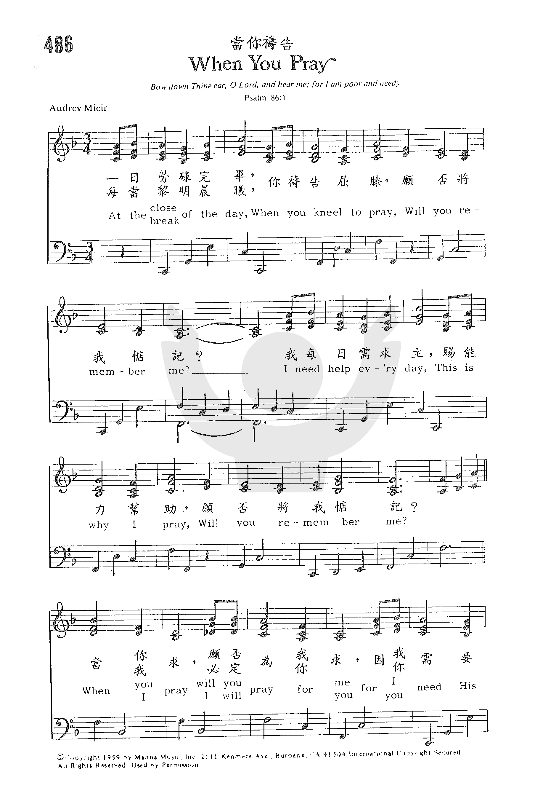
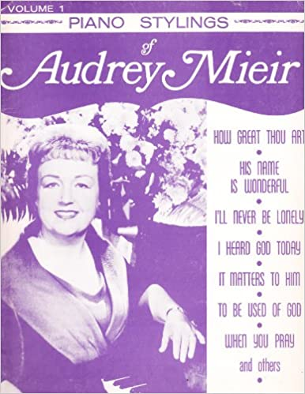

|
|
|
|
At the close of the day, when you kneel to pray,
Will you remember me? I need help every day, this is why I pray, Will you remember me? When you pray, will you pray for me, For I need His love and His care. When you pray, will you pray for me, Will you whisper my name in your prayer? At the close of the day, when I kneel to pray, I will remember you. You need help every day, this is why I pray, And I will remember you.
|
【當你禱告】 每當日暮黃昏，你禱告父神，有否將我惦記？
|
|
https://www.zanmeishige.com/tab/26061.html?songbook=1&index=486

|
|
|
|
|

https://youtu.be/PFfRJNxRZe0 -
當你禱告 When You Pray By Audrey Mieir 古今聖詩(204) Instrumental Christian Music https://youtu.be/-MItf7zsZC8 -
https://youtu.be/tcDq6ic6s2c https://www.youtube.com/watch?v=_gj6vZwttmU
1275
When You Pray 当你祷告
| Text: | When You Pray |
| Author: | A.M. |
| Tune: | [At the close of the day when you kneel to pray] |
| Composer: | Audrey Mieir |
| Short Name: | Audrey Mieir |
| Full Name: | Mieir, Audrey, 1916-1996 |
| Birth Year: | 1916 |
| Death Year: | 1996 |

:format(jpeg):mode_rgb():quality(90)/discogs-images/R-3665235-1339500197-8751.jpeg.jpg)
Audrey Mieir's musical gift showed itself an early age, when she began singing and leading choral performances. In the 1950’s she established the Harmony Chorus, and worked with musician-evangelist Phil Kerr. These efforts were followed by concerts throughout America in the 1960’s. Mieir is also remembered as music director for Rex Humbard’s television show Cathedral of Tomorrow, and for helping found orphanages in Korea.
© The Cyber Hymnal™ (www.hymntime.com/tch)
Tune Information
| Title: | [At the close of the day when you kneel to pray] |
| Composer: | Audrey Mieir |
| Key: | G Major |
| Copyright: | © Copyright 1959 by Manna Music, Inc., 2111 Kenmere Ave., Burbank, CA 91504 International Copyright Secured. All Rights Reserved. Used by Permission. |
祂名稱為奇妙 His Name Is Wonderful
(如果你看不到媒體播放器, 請直接點擊歌名)
祂名稱為奇妙，祂名稱為奇妙，
祂名稱為奇妙，耶穌我主；
祂是全能君王，祂是萬有之主，
祂名稱為奇妙，耶穌我主。
祂是好牧者，是萬古的磐石，
祂是全能的神；
當伏在主前，敬愛崇拜祂，
祂名稱為奇妙，耶穌我主。
巧逢星期天的聖誕節不多，這首歌是誕生在這罕有的日子。 那天茂奧玨（Audrey
Mieir, 1916 - 1996）去加州杜瓦提市的一個小教堂敬拜，她的姐夫是該教會的牧師。 有一個少女扮馬利亞，一個男孩扮天使，他們用洋娃娃作嬰孩耶穌。 整個教堂用棕葉佈置，它的香味改變了教堂的氣氛，茂奧玨身感有
神的使者同在。 當風琴奏起柔和的聖樂時， 她環顧周遭，老人們，拭淚緬懷以往的聖誕節，小孩們都張口聆聽。 牧師站在講台上，雙手漸舉向天而言：「祂名稱為奇妙！」這句話如閃電地進了她的腦海。 她即刻在她聖經的扉頁記下來。 當晚她和一群年輕人相聚時，她就自彈自唱這首新歌，他們即刻和唱。 這首歌能流傳
茂奧玨出生在美國的賓州。 十六歲時，就開始了她作曲的生涯。 1970年，賓州基督教書展時，她應邀為讀者簽名。 在開始前五分鐘，她就位時，看到一個衣冠整齊的老婦人向她走來擁抱她說：『當我知道你會在這�堮氶A我必須前來告訴你一些事。 我快要八十歲了，我丈夫和我一生在一起合唱，他是
茂奧玨的詩歌活潑輕快，如
「我真快樂」（I’m So Happy），
「我永不再寂寞孤單」（I’ll Never Be Lonely Again），
「當你求」（When
You Pray）等。
在60年代，曾廣受年青人喜愛。
http://www.mbcsfv.org/chinese/library/hymncampanions/210.html